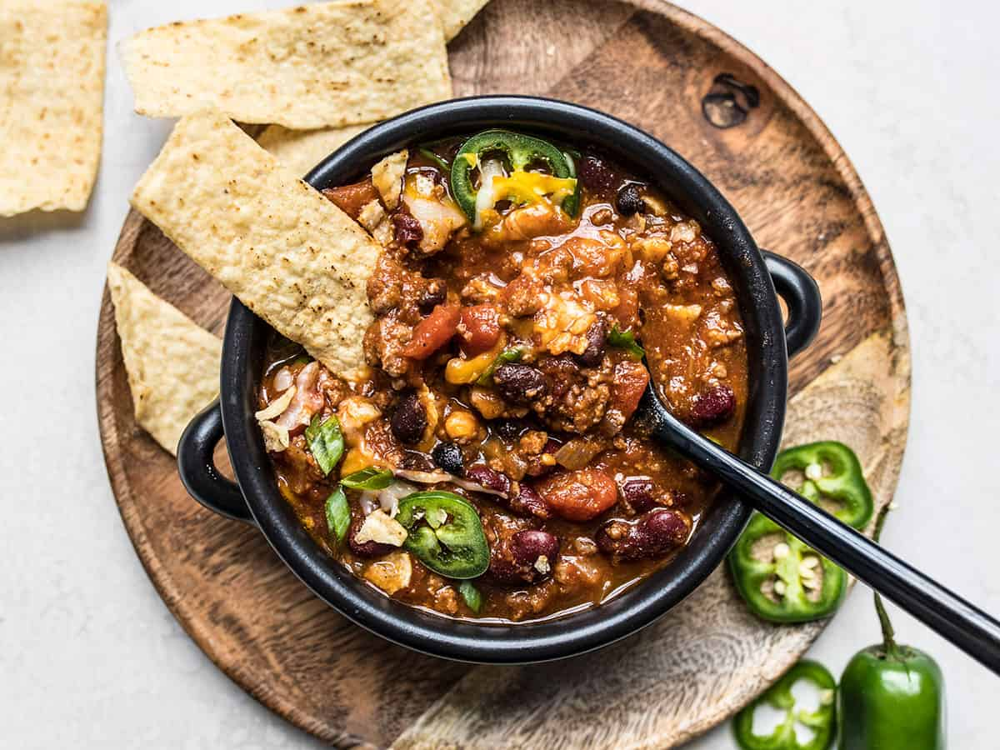

Nol's World Famous Chili

Description
Nol's famous chili will have you smackin your lips and rubbing your belly. A chili with some kick, will
surely please even the pickiest eaters. The combination of beans, onion, and tomatoes has been around for hundreds
of years, but Chef Nol may have mastered it here. Don't forget, more is always better when it comes to
Chef Nol's recipes.
Ingredients
- 400g of ground beef
- 1 diced yellow onion
- 15oz of black beans
- 15oz of diced tomatoes
- 3 chopped Jalapeños
- 2 garlic cloves
- 6oz of tomato paste
- 2tbsp of olive oil
- 1 cup of water
- Season to your choice
Making the Dish
- Dice the onion and tomatoes and mince the garlic
- Add onion and garlic to large pot and cook until aromatic base starts to form
- Add ground beef and sauté until fully brown
- Drain the beans and add with tomatoes, cup of water, tomato paste, and seasonings of your choice
- Stir well and bring to a simmer
- Place a lid and let simmer for 30 minutes